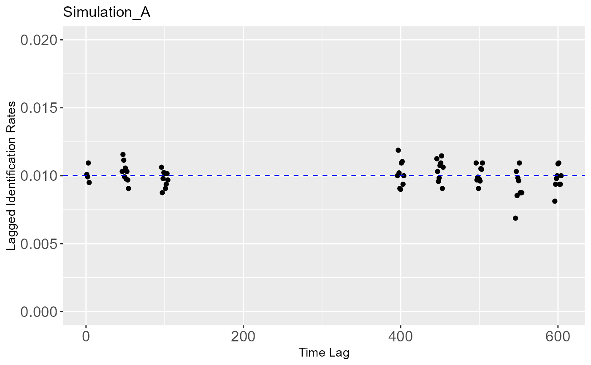

Simulate three types of animal movement patterns
Usage
lir_simulation_A(N, n, tp)
lir_simulation_B(N, n, lambda, tp)
lir_simulation_C(Z, N, n, lambda, mu, tp)Arguments
- N
A positive integer, representing the population size within the study area.
- n
A vector or a positive integer, representing the number of individuals identified in each sampling period. It indicates the same number of individuals identified in all sampling periods if a positive integer.
- tp
A set of observed time.
- lambda
The rate of emigration from a study area.
- Z
A positive integer, representing the population size within a closed area, members of which can be either inside or outside the study area.
- mu
The rate of reimmigration from a study area.
Details
Type A (Closed): a population of N individuals present in the study area throughout, with no immigration, emigration, birth, death.
Type B (Permanent emigration): a population of N individuals in the study area with permanent emigration at a rate of lambda per individual per time unit, with departed individuals being replaced 1:1 by new individuals.
Type C (Emigration plus reimmigration): a closed population of Z individuals, members of which can be either inside or outside the study area. Individuals in the study area leave the study area at a rate of lambda per individual per time unit and individuals outside the study area reenter it with a probability of mu per individual per time unit.
Examples
# Example
# set population size and number of subsampling
Z <- 300; N <- 100; n <- 40
# set the observation time
tp <- c(1:5, 51:55, 101:105, 501:505, 601:605)
# set parameters
lambda_B <- 0.008; lambda_C <- 0.08; mu_C <- 0.04
# simulation of Type A
simulation_A <- lir_simulation_A(N, n, tp)
lir_data <- lir_nonparametric_estimation(simulation_A, n, tp)
mij <- lir_data$mij
nij <- lir_data$nij
tauij <- lir_data$tauij
theta <- round(Model1(mij, nij, tauij)$par, 8)
# a plot object
graph_data <- data.frame(tau = lir_data$tau, R_tau = lir_data$R_tau)
require(ggplot2)
ggplot(data = graph_data, aes(tau, R_tau)) +
geom_point() +
scale_y_continuous(limits = c(0, 0.02)) +
theme(axis.text = element_text(size = rel(1.2))) +
labs(x = 'Time Lag', y = 'Lagged Identification Rates', title = 'Simulation_A') +
geom_hline(yintercept = theta, linetype = 2, color = 'blue')

geom_hline(yintercept = 0.01, linetype = 3, color = 'red')
#> mapping: yintercept = ~yintercept
#> geom_hline: na.rm = FALSE
#> stat_identity: na.rm = FALSE
#> position_identity
# simulation of Type B
simulation_B <- lir_simulation_B(N, n, lambda_B, tp)
lir_data <- lir_nonparametric_estimation(simulation_B, n, tp)
mij <- lir_data$mij
nij <- lir_data$nij
tauij <- lir_data$tauij
theta <- round(Model2(mij, nij, tauij)$par, 8)
alpha <- theta[1]; beta <- theta[2]
graph_data <- data.frame(tau = lir_data$tau, R_tau = lir_data$R_tau)
tT <- max(tp-min(tp))
line_data <- data.frame(tau = seq_len(tT), R_tau = alpha*exp(-beta*seq_len(tT)))
require(ggplot2)
ggplot(data = graph_data, aes(tau, R_tau)) +
geom_point() +
theme(axis.text = element_text(size = rel(1.2))) +
labs(x = 'Time Lag', y = 'Lagged Identification Rates', title = 'Simulation_B') +
geom_line(aes(tau, R_tau), line_data, linetype = 2, color='blue')
# simulation of Type C
simulation_C <- lir_simulation_C(Z, N, n, lambda_C, mu_C, tp)
lir_data <- lir_nonparametric_estimation(simulation_C, n, tp)
mij <- lir_data$mij
nij <- lir_data$nij
tauij <- lir_data$tauij
theta <- round(Model3(mij, nij, tauij)$par, 8)
alpha <- theta[3]; beta <- theta[2]; gamma <- theta[1]
graph_data <- data.frame(tau = lir_data$tau, R_tau = lir_data$R_tau)
tT <- max(tp-min(tp))
line_data <- data.frame(tau = seq_len(tT), R_tau = gamma*exp(-beta*seq_len(tT))+alpha)
require(ggplot2)
ggplot(data = graph_data, aes(tau, R_tau)) +
geom_point() +
theme(axis.text = element_text(size = rel(1.2))) +
labs(x = 'Time Lag', y = 'Lagged Identification Rates', title = 'Simulation_C') +
geom_line(aes(tau, R_tau), line_data, linetype = 2, color='blue')